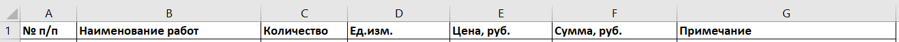

Сохранение файлов

Андрей, ты уже умеешь вводить данные в Excel, создавать таблицы и даже считать простые формулы. Настало время научиться правильно сохранять нашу работу. В этом уроке ты узнаешь, какие форматы лучше использовать, чтобы не потерять данные, как подготовить файл к отправке по почте, а также — как сохранить таблицу в формате PDF, если тебе нужно отправить смету заказчику или распечатать ее. Это тот самый этап, когда работа становится официальной — ты сохраняешь документ, который может пойти дальше по проекту или даже на стройку. Так что давай учиться делать это правильно.
Основной формат Excel: .xlsx
Когда ты нажимаешь «Сохранить как», Excel по умолчанию предлагает сохранить файл в формате .xlsx — это основной рабочий формат. Он сохраняет все данные, формулы и стили. Именно в нем ты будешь работать каждый день.
Не путай его с устаревшим .xls — это формат старых версий Excel. Используй только .xlsx.
Сохранение копии в PDF
Часто таблицы нужно отправить, чтобы получатель не мог ничего изменить. Например, ты сделал смету, и хочешь показать ее заказчику.
В таком случае сохраняем копию в PDF.

Пошагово:
- Файл → Сохранить как
- Выбери папку
- В поле «Тип файла» выбери PDF
- Нажми «Сохранить»
Если перед этим ты выделишь диапазон или нажмешь «Печать» → «Просмотр», Excel сохранит именно эту часть. Это удобно, если не нужно показывать весь файл.
Быстрое сохранение по Ctrl+S
Не забывай регулярно сохранять файл по ходу работы. Самый быстрый способ — сочетание клавиш Ctrl + S. Это сбережет тебе много нервов.

Добавь имя и дату в название файла:
Смета_ЖК_Северный_2025-04-20.xlsx
Практическая часть
Сейчас вместе создадим шаблон сметы и сохраним его в двух форматах — Excel и PDF. Поехали!
- Создай таблицу сметы. Используй структуру:

- Заполни 3–5 строк произвольными данными (как в предыдущем уроке).
- В ячейках столбца F поставь формулу «=C2*E2» и протяни вниз.
- Назови файл: Смета_Пример.xlsx
- Сохрани файл в формате Excel: Файл → Сохранить как → .xlsx
- Затем сохрани его как PDF: Файл → Сохранить как → Тип файла: PDF → Сохранить
Если хочешь сохранить только таблицу, выдели нужный диапазон перед сохранением в PDF.
Ты большой молодец! Теперь ты умеешь сохранять свои таблицы и в Excel, и в PDF. Это значит, что ты можешь готовить документы для коллег, руководства или заказчиков.
На следующем уроке мы начнем оформлять таблицы — добавим шрифты, границы, заливки. Это не просто красиво, но и помогает визуально структурировать данные. Так что переходи в следующий урок, чтобы сделать свои таблицы профессиональными и читаемыми. Но перед этим не забудь решить тест!